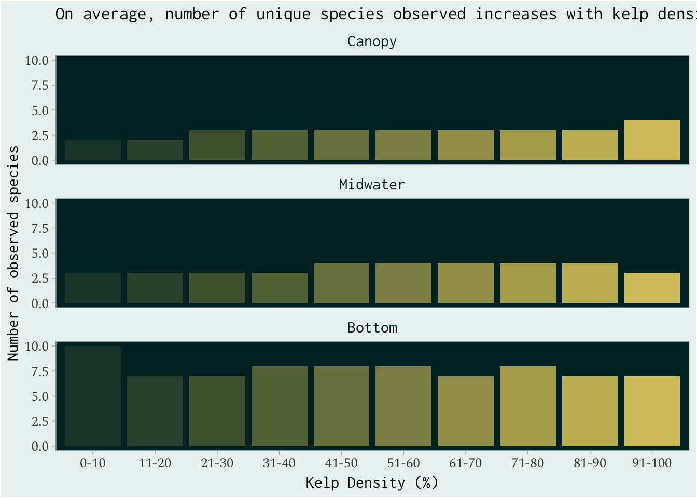
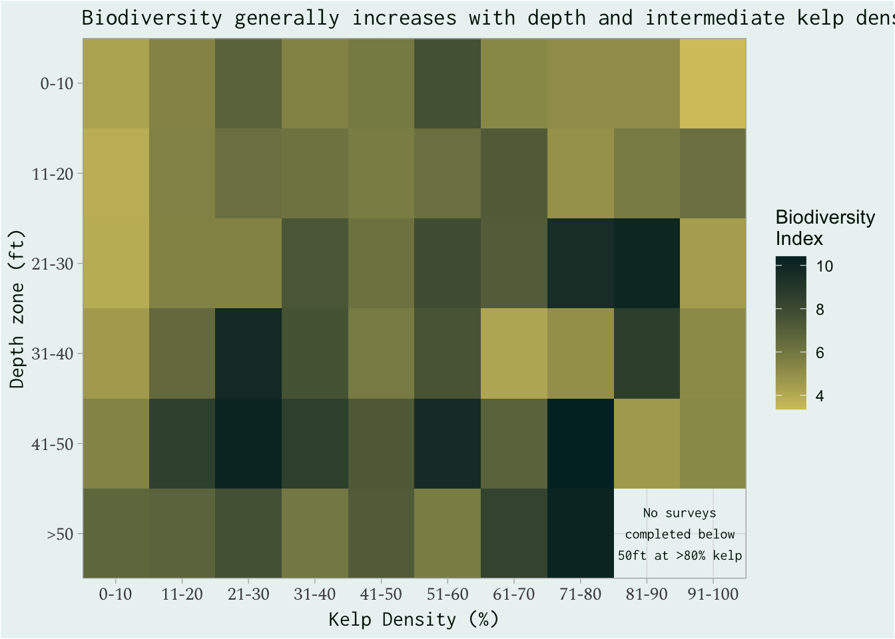
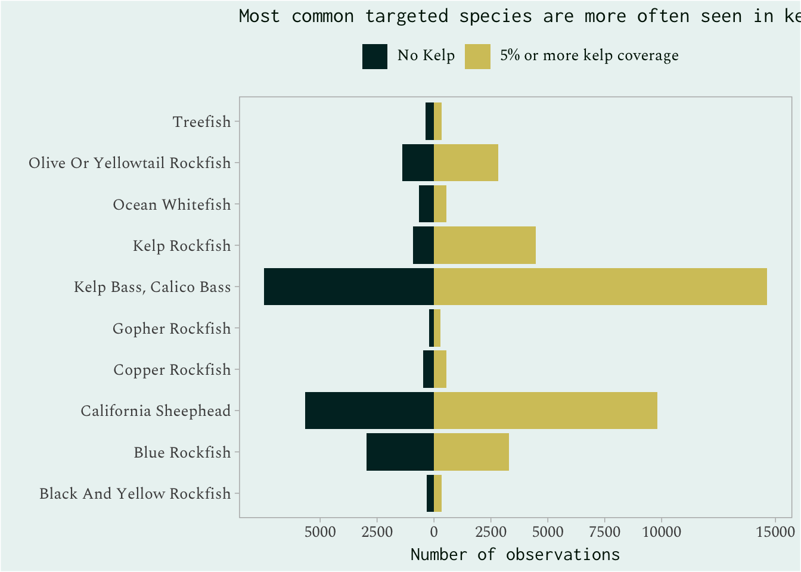

Code
library(tidyverse)
library(here)
library(vegan)
library(ggtext)
library(sysfonts)
subtidal <- read_csv(here("posts", "eds240-infographic", "data", "ucsb_fish_clean_obs_1999-2024.csv"))
taxon <- read_csv(here("posts", "eds240-infographic", "data", "PISCO_kelpforest_taxon_table.1.3.csv")) %>%
filter(campus == "UCSB")
fish_taxon <- left_join(subtidal, taxon, by = "classcode") %>%
select(year, site, side, zone, level, transect, classcode, fish_tl, depth, pctcnpy, count, Family, Genus, Species, common_name) %>%
janitor::clean_names()
fish_role <- read_csv(here("posts", "eds240-infographic", "data", "ucsb_fish_clean_tx_bm_1999-2024.csv")) %>%
filter(year > 2005) %>%
select(classcode, BroadTrophic, Targeted) %>%
distinct() %>%
group_by(classcode) %>%
summarise(BroadTrophic = paste(BroadTrophic, collapse = ", "),
Targeted = paste(Targeted, collapse = ", "),
.groups = 'drop') %>%
janitor::clean_names()
fish <- left_join(fish_taxon, fish_role, by = "classcode") %>%
janitor::clean_names()
fish_clean <- fish %>%
filter(!is.na(fish_tl)) %>%
group_by(site) %>%
mutate(total_years = length(unique(year))) %>% # Calculate number of years each site was surveyed
ungroup() %>%
mutate(island = case_when( # Assign sites to respective islands
str_detect(pattern = "SRI", string = site) ~ "Santa Rosa",
str_detect(pattern = "SCI", string = site) ~ "Santa Cruz",
str_detect(pattern = "SMI", string = site) ~ "San Miguel",
str_detect(pattern = "ANA", string = site) ~ "Anacapa",
TRUE ~ "remove"),
level = factor(level, levels = c("CAN", "MID", "BOT"))) %>% # Refactor survey levels
filter(island != "remove",
total_years >= 15,
year > 2005
) %>% # Select only sites with >=15 years of surveys
select(-total_years)
# Calculate canopy averages at transect level
kelp <- fish_clean %>%
group_by(site, side, transect, year) %>%
summarise(av_pctcnpy = round(mean(pctcnpy, na.rm = TRUE), digits = 0)) %>%
ungroup() %>%
mutate(cnpy_pct = case_when( # Bin percent canopy cover
av_pctcnpy <= 10 ~ "0-10",
av_pctcnpy <= 20 ~ "11-20",
av_pctcnpy <= 30 ~ "21-30",
av_pctcnpy <= 40 ~ "31-40",
av_pctcnpy <= 50 ~ "41-50",
av_pctcnpy <= 60 ~ "51-60",
av_pctcnpy <= 70 ~ "61-70",
av_pctcnpy <= 80 ~ "71-80",
av_pctcnpy <= 90 ~ "81-90",
av_pctcnpy > 90 ~ "91-100",
TRUE ~ NA,
)
) %>%
filter(!is.na(cnpy_pct))
fish_kelp <- left_join(fish_clean, kelp, by = join_by(site, side, transect, year)) # Attach bins to data
species_sums <- fish_kelp %>%
group_by(family) %>%
mutate(total_obs = n(),
total_counts = sum(count)) %>%
ungroup() %>%
mutate(fish_family = case_when(
total_counts >= 30000 ~ family,
TRUE ~ "Other"))
# Color palettes
plot_palette = c("#001806", "#7F6F2B", "#9A7408", "#D4C569", "#AA9D52", "#EBF4F2", "#B6E5F0", "#96B8A9", "#1E6848", "#004B5D", "#002B2B")
# fonts
font_add_google(name = "Spectral", family = "spectral")
font_add_google(name = "Inconsolata", family = "inconsolata")
species_sums$fish_family <- factor(species_sums$fish_family,
levels = c("Atherinopsidae", "Embiotocidae", "Labridae", "Pomacentridae", "Sebastidae", "Serranidae", "Other"),
labels = c("Baitfish", "Surfperch", "Wrasses", "Damselfish", "Rockfish", "Basses", "Other"))
level_labs <- c(CAN = "Canopy",
MID = "Midwater",
BOT = "Bottom")
unique_sp <- species_sums %>%
group_by(year, cnpy_pct, level, side, zone, site) %>%
summarize(transects = max(transect),
unique_species = length(unique(classcode))) %>%
ungroup() %>%
group_by(cnpy_pct, level) %>%
summarize(av_sp = round(mean(unique_species), 0))
ggplot(unique_sp) +
geom_col(aes(cnpy_pct, av_sp, alpha = cnpy_pct), fill = "#D4C569", color = NA, show.legend = FALSE) +
#geom_jitter(aes(cnpy_pct, unique_species, color = fish_family, size = total_fish), alpha = 0.9) +
#theme(legend.position = "none") +
scale_color_manual(values = fish) +
#scale_alpha_discrete(range = c(0.2,1)) +
facet_wrap(~level,
#scales = "free",
ncol = 1,
labeller = labeller(level = level_labs)) +
theme_light() +
theme(plot.title = element_markdown(family = "inconsolata"),
axis.title = element_markdown(family = "inconsolata", size = 12),
axis.text = element_markdown(family = "spectral", size = 10),
strip.text = element_markdown(family = "inconsolata", color = "#002B2B", size = 12),
panel.background = element_rect(fill = "#002B2B"),
panel.grid.major = element_line(linewidth = 0),
panel.grid.minor = element_line(linewidth = 0),
legend.background = element_rect(fill = NA),
legend.box.background = element_blank(),
plot.background = element_rect(fill = "#EBF4F2"),
strip.background = element_blank(),
strip.placement = "inside",
axis.title.x = element_text(margin = margin(t = 5, r = 0, b = 0, l = 0, unit = "pt")),) +
labs(x = "Kelp Density (%)",
y = "Number of observed species",
#color = "Family",
#size = "Total observed fish",
title = "On average, number of unique species observed increases with kelp density and depth",
alt = "A bar chart representing the average number of species across kelp density bins of 10%, faceted by area in the water column that the survey was completed. Overall, number of species increased with increasing kelp, and the bottom water surveys saw the most species on average.")
Code
fish_kelp %>%
mutate(depth_ft = round(depth * 3.28084, digits = 0), # convert depth from meters to feet
depth_zone = case_when(
depth_ft <= 10 ~ "0-10",
depth_ft <= 20 ~ "11-20",
depth_ft <= 30 ~ "21-30",
depth_ft <= 40 ~ "31-40",
depth_ft <= 50 ~ "41-50",
depth_ft > 50 ~ ">50",
TRUE ~ NA
)) %>%
filter(!is.na(depth_zone)) %>%
mutate(depth_zone = forcats::fct_relevel(depth_zone,
">50", "41-50", "31-40", "21-30", "11-20", "0-10")) %>%
group_by(cnpy_pct, depth_zone, classcode) %>%
summarise(num_sp = sum(count),
n = num_sp*(num_sp-1)) %>%
ungroup() %>%
group_by(cnpy_pct, depth_zone,) %>%
summarize(total_indiv = sum(num_sp),
N = total_indiv*(total_indiv-1),
biodiv = N / sum(n)) %>%
filter(!is.infinite(biodiv)) %>%
#av_species = mean(length(unique(classcode)), rm.na = TRUE)) %>%
ggplot(aes(cnpy_pct, depth_zone, fill = biodiv)) +
geom_tile() +
scale_fill_gradient(high = "#002B2B", low = "#D4C569") +
labs(x = "Kelp Density (%)",
y = "Depth zone (ft)",
fill = "Biodiversity\nIndex",
title = "Biodiversity generally increases with depth and intermediate kelp density",
alt = "A heatmap representing the biodiversity index with depth zone from 0 to 50ft on the y-axis and kelp desnity bins of 10% from 0-100% on the x-axis. In general, biodiversity increased with depth and the highest biodiversity was found in the intermediate densities of kelp.") +
scale_x_discrete(expand = c(0, 0)) + # Remove dead space
scale_y_discrete(expand = c(0, 0)) +
annotate("text", x = 9.5, y = 1, label = "No surveys\ncompleted below\n50ft at >80% kelp", size =2.9, color = "#001806", family = "inconsolata") +
theme_light() +
theme(plot.title = element_markdown(family = "inconsolata"),
axis.title = element_markdown(family = "inconsolata", size = 12),
axis.text = element_markdown(family = "spectral", size = 10),
panel.background = element_rect(fill = "#EBF4F2"),
plot.background = element_rect(fill = "#EBF4F2"),
legend.background = element_rect(fill = "#EBF4F2"),
#legend.title = element_markdown(family = "spectral"),
#legend.text = element_markdown(family = "inconsolata"),
panel.grid.minor = element_blank(),
text = element_text(color = "#001806"),
axis.title.x = element_text(margin = margin(t = 5, r = 0, b = 0, l = 0, unit = "pt")))
Code
target <- fish_kelp %>%
filter(targeted == "Targeted") %>%
group_by(classcode) %>%
summarize(total_obs = n(),
total_counts = sum(count)) %>%
filter(total_obs >= 5) %>%
slice_max(total_obs, n = 10) %>%
ungroup()
fish_kelp %>%
filter(classcode %in% target$classcode) %>%
mutate(kelp_dens = case_when(
av_pctcnpy < 5 ~ "less_kelp",
TRUE ~ "more_kelp"
)) %>%
group_by(common_name, kelp_dens) %>%
summarize(total_obs = n(),
total_counts= as.numeric(sum(count, na.rm = TRUE))) %>%
ungroup() %>%
mutate(count_dif = case_when(
kelp_dens == "less_kelp" ~ (total_obs * -1),
TRUE ~ total_obs
)) %>%
ggplot() +
geom_col(aes(count_dif, common_name, fill = kelp_dens)) +
scale_fill_manual(labels = c("No Kelp", "5% or more kelp coverage"), values = c("#002B2B", "#D4C569")) +
scale_x_continuous(breaks = c(-5000,-2500,0,2500,5000,7500,10000,15000),
labels = c(breaks = c(5000,2500,0,2500,5000,7500,10000,15000))) +
labs(fill = "",
x = "Number of observations",
y = "",
title = "Most common targeted species are\nmore often seen in kelp",
alt = "A diverging bar plot comparing observations of the 10 most common fishery target species in kelp densities above and below 5%, with fish species on the y-axis and observations on the x-axis. Kelp bass were the most observed species and was significantly observed in kelp densities above 5%. Additional species were on average more often seen in kelp densities above 5% with the exception og Ocean Whitefish and some rockfish having equal observations.") +
theme_light() +
theme(plot.title = element_markdown(family = "inconsolata"),
axis.title = element_markdown(family = "inconsolata", size = 12),
axis.text = element_markdown(family = "spectral", size = 10),
legend.text = element_markdown(family = "spectral", size = 10),
panel.background = element_rect(fill = "#EBF4F2"),
plot.background = element_rect(fill = "#EBF4F2"),
legend.background = element_rect(fill = "#EBF4F2"),
legend.position = "top",
panel.grid.major = element_blank(),
panel.grid.minor = element_blank(),
text = element_text(color = "#001806"),
axis.title.x = element_text(margin = margin(t = 5, r = 0, b = 0, l = 0, unit = "pt")),)